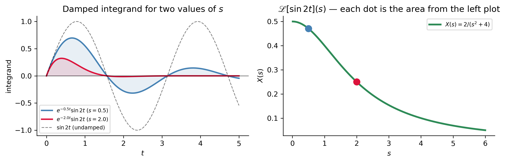
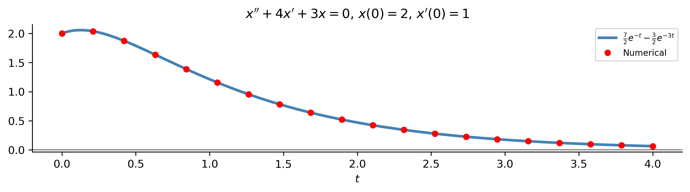
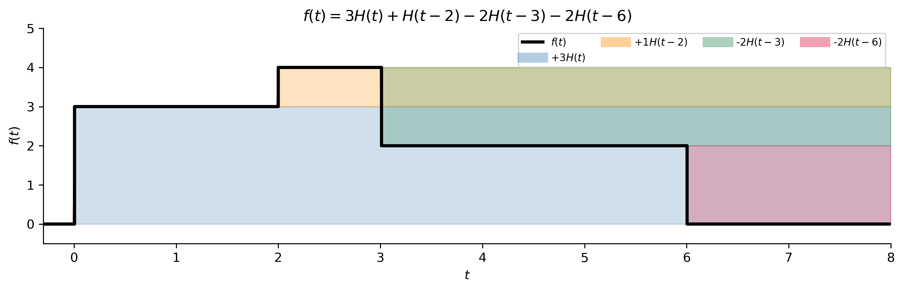
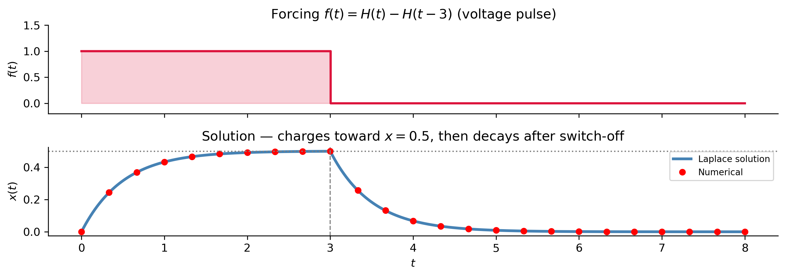

The Laplace Transform
MATH 341 — Notes 6
Goals
What We Will Cover
The big picture — what the transform does and why it works
Definition \(X(s)=\int_0^\infty x(t)e^{-st}dt\) and computing from it
Linearity and the transform table
Inverse transform and partial fractions
Heaviside function — modeling switches
Shift and switching properties
A full IVP with discontinuous forcing
Note
Section 3.1 of Logan (2015).
Tip
New vocabulary: time domain, \(s\)-domain, transform pair, exponential order, piecewise continuous.
The Big Picture
Why a New Method?
Undetermined coefficients and variation of parameters fail when \(f(t)\) is:
- Discontinuous — a switch flipped at \(t=2\)
- An impulse — a hammer blow at \(t=5\)
These are the most common real-world forcing functions in circuits, mechanics, and control.
. . .
ImportantThe Laplace Strategy
\[\underbrace{ax''+bx'+cx = f(t)}_{\text{ODE (hard)}} \xrightarrow{\;\mathscr{L}\;} \underbrace{(as^2+bs+c)X = F(s)+\text{ICs}}_{\text{algebra (easy)}} \xrightarrow{\;\mathscr{L}^{-1}\;} \underbrace{x(t)}_{\text{solution}}\]
Differentiation \(\;\longrightarrow\;\) multiplication by \(s\).
ICs are automatically incorporated. No separate step.
. . .
Think of the logarithm analogy: \(\log(ab) = \log a + \log b\) converts multiplication to addition. The Laplace transform converts differentiation to multiplication.
The Definition
Definition and Notation
ImportantDefinition
\[\mathscr{L}[x(t)](s) = X(s) = \int_0^\infty x(t)\,e^{-st}\,dt\] provided the improper integral converges.
Note
Notation: These slides use \(\mathscr{L}\) (script); the long-form notes and Logan use \(\mathcal{L}\) (calligraphic). Both denote the same operator.
. . .
| Time domain | Transform domain | |
|---|---|---|
| Variable | \(t\) | \(s\) |
| Function | \(x(t)\) (lowercase) | \(X(s)\) (uppercase) |
| Language | “what happens” | “how fast it oscillates/decays” |
. . .
The damping kernel \(e^{-st}\) forces the integrand to zero as \(t\to\infty\) (when \(s>0\) is large enough), making the integral converge. Larger \(s\) damps the function more aggressively.
Computing from the Definition
\(\mathscr{L}[e^{at}]\): \[\int_0^\infty e^{at}e^{-st}dt = \int_0^\infty e^{(a-s)t}dt = \frac{1}{s-a}, \quad s>a.\]
. . .
\(\mathscr{L}[1]\) (set \(a=0\)): \(\quad 1/s\), \(\;s>0\).
. . .
\(\mathscr{L}[t]\) (integration by parts, \(u=t\), \(dv=e^{-st}dt\)): \[\int_0^\infty te^{-st}dt = \frac{1}{s^2}, \quad s>0.\]
. . .
\(\mathscr{L}[\sin kt]\) (using \(\sin kt = \frac{1}{2i}(e^{ikt}-e^{-ikt})\)): \[\frac{k}{s^2+k^2}, \qquad \mathscr{L}[\cos kt] = \frac{s}{s^2+k^2}.\]
Tip
Note: \(\mathscr{L}[\cos kt]\) has \(s\) in the numerator; \(\mathscr{L}[\sin kt]\) has the constant \(k\). This reflects \(\cos 0 = 1\) vs. \(\sin 0 = 0\).
Geometric Intuition
Linearity and Existence
ImportantLinearity
\[\mathscr{L}[\alpha x + \beta y] = \alpha\mathscr{L}[x] + \beta\mathscr{L}[y]\]
Example: \(\mathscr{L}[3e^{-2t}+5\sin 4t] = \dfrac{3}{s+2} + \dfrac{20}{s^2+16}\)
. . .
Existence conditions (sufficient):
- Piecewise continuous on every \([0,b]\) — finite number of finite-jump discontinuities.
- Exponential order — \(|x(t)| \leq Me^{rt}\) for large \(t\).
. . .
Failure examples: - \(e^{t^2}\): not exponential order (grows too fast) - \(1/t\): not piecewise continuous at \(t=0\) - If \(X(s)\not\to 0\) as \(s\to\infty\), it cannot be a Laplace transform
The Inverse Transform
\(\mathscr{L}^{-1}\) and Partial Fractions
\[x(t) = \mathscr{L}^{-1}[X(s)] \qquad \text{(also linear)}\]
In practice: partial fractions decompose \(X(s)\) into table-recognizable pieces.
. . .
Type 1 — Distinct real poles: \[\frac{P(s)}{(s-a)(s-b)} = \frac{A}{s-a}+\frac{B}{s-b} \;\Rightarrow\; Ae^{at}+Be^{bt}\]
Type 2 — Repeated pole: \[\frac{P(s)}{(s-a)^2} = \frac{A}{s-a}+\frac{B}{(s-a)^2} \;\Rightarrow\; Ae^{at}+Bte^{at}\]
Type 3 — Complex poles (complete the square): \[\frac{1}{s^2+2s+5} = \frac{1}{(s+1)^2+4} \;\Rightarrow\; \frac{1}{2}e^{-t}\sin 2t\]
Partial Fractions: Worked Example
Find \(\mathscr{L}^{-1}\!\left[\dfrac{2s+9}{(s+1)(s+3)}\right]\).
. . .
Write: \(\dfrac{2s+9}{(s+1)(s+3)} = \dfrac{A}{s+1}+\dfrac{B}{s+3}\)
. . .
Cover-up rule: \[A = \frac{2(-1)+9}{(-1+3)} = \frac{7}{2}, \qquad B = \frac{2(-3)+9}{(-3+1)} = -\frac{3}{2}.\]
. . .
Invert: \[x(t) = \frac{7}{2}e^{-t} - \frac{3}{2}e^{-3t}.\]
s_v, t_v = sym.symbols('s t', positive=True)
expr = (2*s_v+9)/((s_v+1)*(s_v+3))
display(Math(r"\text{PF: }" + sym.latex(sym.apart(expr,s_v))))
display(Math(r"x(t)=" + sym.latex(sym.inverse_laplace_transform(expr,s_v,t_v))))\(\displaystyle \text{PF: }- \frac{3}{2 \left(s + 3\right)} + \frac{7}{2 \left(s + 1\right)}\)
\(\displaystyle x(t)=\frac{7 e^{- t}}{2} - \frac{3 e^{- 3 t}}{2}\)
Transform of Derivatives
The Key ODE Formula
ImportantTransform of Derivatives
\[\mathscr{L}[x'(t)] = s\,X(s) - x(0)\] \[\mathscr{L}[x''(t)] = s^2 X(s) - s\,x(0) - x'(0)\]
Derivation (integration by parts, \(u=e^{-st}\), \(dv=x'dt\)): \[\int_0^\infty x'e^{-st}dt = [xe^{-st}]_0^\infty + s\int_0^\infty xe^{-st}dt = -x(0)+sX(s). \checkmark\]
. . .
Why this is powerful. Applying \(\mathscr{L}\) to \(ax''+bx'+cx=f(t)\): \[(as^2+bs+c)X(s) = F(s) + a(sx_0+x_1) + bx_0.\]
The ODE becomes an algebraic equation for \(X(s)\). ICs appear automatically on the right-hand side — no separate enforcement needed.
Full ODE Example
Solve \(x''+4x'+3x=0\), \(x(0)=2\), \(x'(0)=1\).
. . .
Step 1 — Transform: \[[s^2X-2s-1]+4[sX-2]+3X = 0 \;\Rightarrow\; (s^2+4s+3)X = 2s+9.\]
Step 2 — Solve: \[X(s) = \frac{2s+9}{(s+1)(s+3)}.\]
Step 3 — PF + invert: \[x(t) = \tfrac{7}{2}e^{-t} - \tfrac{3}{2}e^{-3t}.\]

The Heaviside Function
Modeling On/Off Switches
\[H(t-a) = \begin{cases} 0, & t < a \\ 1, & t \geq a \end{cases}\]
A mathematical switch: off before \(t=a\), on at \(t=a\).
\[\mathscr{L}[H(t-a)] = \int_a^\infty e^{-st}dt = \frac{e^{-as}}{s}, \quad s>0.\]
. . .
Building piecewise functions. The pulse \(H(t-a)-H(t-b)\) equals 1 on \([a,b)\), zero elsewhere.
Example (Logan 3.8): \[f(t) = \begin{cases}3 & 0\leq t<2\\4 & 2\leq t<3\\2 & 3\leq t<6\\0 & t>6\end{cases} = 3H(t) + H(t-2) - 2H(t-3) - 2H(t-6)\]
\[F(s) = \frac{1}{s}\left(3 + e^{-2s} - 2e^{-3s} - 2e^{-6s}\right)\]
Heaviside Decomposition — Visual

Tip
Think of it as a running adjustment: start at \(3\), add \(1\) at \(t=2\), subtract \(2\) at \(t=3\), subtract \(2\) at \(t=6\).
Operational Properties
Shift Property
ImportantShift Property
\[\mathscr{L}[f(t)e^{at}] = F(s-a)\]
Multiplying by \(e^{at}\) in the time domain shifts the transform \(a\) units right in the \(s\)-domain.
| \(f(t)\) | \(F(s)\) | \(f(t)e^{at}\) | \(\mathscr{L}[f(t)e^{at}]\) |
|---|---|---|---|
| \(t\) | \(1/s^2\) | \(te^{-2t}\) | \(1/(s+2)^2\) |
| \(\sin 3t\) | \(3/(s^2+9)\) | \(e^{-t}\sin 3t\) | \(3/((s+1)^2+9)\) |
| \(\cos 3t\) | \(s/(s^2+9)\) | \(e^{2t}\cos 3t\) | \((s-2)/((s-2)^2+9)\) |
. . .
Inverse direction. Whenever you see \((s-a)^2+k^2\) in the denominator, complete the square and apply the shift property in reverse.
Example: \(\mathscr{L}^{-1}\!\left[\dfrac{3}{(s+1)^2+9}\right] = e^{-t}\sin 3t.\)
Switching Property
ImportantSwitching Property
\[\mathscr{L}[H(t-a)f(t-a)] = e^{-as}F(s)\] \[\mathscr{L}^{-1}[e^{-as}F(s)] = H(t-a)f(t-a)\]
A factor \(e^{-as}\) in the \(s\)-domain signals a time delay of \(a\).
. . .
Example. Find \(\mathscr{L}^{-1}\!\left[\dfrac{e^{-3s}}{s-2}\right]\).
Since \(\mathscr{L}^{-1}[1/(s-2)] = e^{2t}\), the switching property gives: \[\mathscr{L}^{-1}\!\left[\frac{e^{-3s}}{s-2}\right] = H(t-3)\,e^{2(t-3)}.\]
The exponential starts growing from \(t=3\), not from \(t=0\).
. . .
Tip
Signal: see an \(e^{-as}\) multiplying a transform? That’s a time delay. Strip off the exponential, invert the remaining \(F(s)\), replace \(t\) with \(t-a\), and multiply by \(H(t-a)\).
Discontinuous Forcing
Example: RC Circuit with Switch
Solve \(x' + 2x = f(t)\), \(x(0)=0\), where \(f(t)=1\) for \(0\leq t<3\), \(f(t)=0\) for \(t\geq 3\).
. . .
Step 1. \(f(t) = H(t) - H(t-3)\), so \(F(s) = \frac{1}{s} - \frac{e^{-3s}}{s}\).
Step 2. \((s+2)X = \frac{1-e^{-3s}}{s}\), so \(X(s) = \frac{1}{s(s+2)} - \frac{e^{-3s}}{s(s+2)}\).
Step 3. PF: \(\frac{1}{s(s+2)} = \frac{1/2}{s} - \frac{1/2}{s+2}\), so \(\mathscr{L}^{-1}\!\left[\frac{1}{s(s+2)}\right] = \frac{1}{2}(1-e^{-2t})\).
Step 4. Switching: \(\mathscr{L}^{-1}\!\left[\frac{e^{-3s}}{s(s+2)}\right] = H(t-3)\cdot\frac{1}{2}(1-e^{-2(t-3)})\).
\[\boxed{x(t) = \frac{1}{2}(1-e^{-2t}) - \frac{H(t-3)}{2}(1-e^{-2(t-3)})}\]
Discontinuous Example — Solution Plot

Note
The solution \(x(t)\) is continuous even though the forcing is discontinuous. Its derivative \(x'(t)\) has a jump at \(t=3\).
The Transform Table
Short Table of Laplace Transforms
| \(x(t)\) | \(X(s)\) |
|---|---|
| \(e^{at}\) | \(\frac{1}{s-a}\) |
| \(t^n\) | \(\frac{n!}{s^{n+1}}\) |
| \(\sin kt\) | \(\frac{k}{s^2+k^2}\) |
| \(\cos kt\) | \(\frac{s}{s^2+k^2}\) |
| \(e^{at}\sin kt\) | \(\frac{k}{(s-a)^2+k^2}\) |
| \(e^{at}\cos kt\) | \(\frac{s-a}{(s-a)^2+k^2}\) |
| \(H(t-a)\) | \(\frac{e^{-as}}{s}\) |
| \(H(t-a)f(t-a)\) | \(e^{-as}F(s)\) |
| \(f(t)e^{at}\) | \(F(s-a)\) |
| \(x^{(n)}(t)\) | \(s^n X - s^{n-1}x(0)-\cdots-x^{(n-1)}(0)\) |
| \(\delta_a(t)\) | \(e^{-as}\) |
| \(\int_0^t f(\tau)g(t-\tau)d\tau\) | \(F(s)G(s)\) |
Summary: The Five-Step Method
ImportantAlgorithm
- Write \(f(t)\) using Heaviside steps if piecewise.
- Apply \(\mathscr{L}\) to both sides; use the derivative formula.
- Solve for \(X(s)\) algebraically.
- Partial fractions to decompose \(X(s)\) into table forms.
- Invert term by term; use the switching property for each \(e^{-as}\) factor.
. . .
- Each \(e^{-as}\) factor in \(X(s)\) signals a time delay: strip it, invert the rest as \(f(t)\), then replace \(t\to t-a\) and multiply by \(H(t-a)\).
- Complex poles \((s-\alpha)^2+\beta^2\): complete the square, then use \(\mathscr{L}[e^{\alpha t}\sin\beta t]\) and \(\mathscr{L}[e^{\alpha t}\cos\beta t]\).
- Repeated poles \((s-a)^2\): the inverse is \(Ae^{at}+Bte^{at}\).
- Initial conditions are free: they appear automatically when you expand \(\mathscr{L}[x'']\) and \(\mathscr{L}[x']\) — no need to enforce them separately.
References
Logan, J David. 2015. A First Course in Differential Equations, Third Edition.
TipLooking Ahead
The convolution theorem (\(\mathscr{L}[f*g]=F(s)G(s)\)) and the Dirac delta (\(\mathscr{L}[\delta_a]=e^{-as}\)) — both already in the table — are the main tools of §3.2 and beyond. Convolution expresses solutions as integrals over arbitrary forcing; the delta models instantaneous impulses that no classical function can describe.
Next: Applying Laplace Transforms to Differential Equations — Logan §3.2.